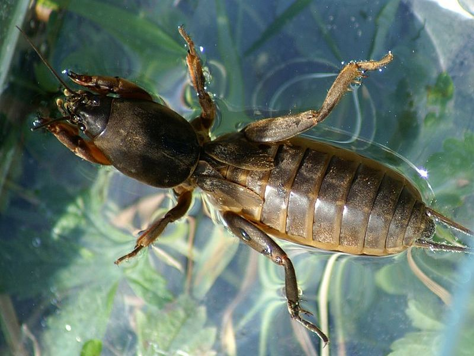

Europäische Maulwurfsgrille
Gryllotalpa gryllotalpa
Die Maulwurfsgrille liebt lockeren Boden und gräbt deshalb mit Vorliebe im weichen Torf des Riedes. Mit den schaufelförmigen Vorderbeinen werden Grabgänge angelegt. Dort leben die Tiere von Insekten, Würmern und Pflanzenwurzeln. Ihre zirpenden Laute wurden wiederholt als Wechselkrötengesang gedeutet. Diese Amphibienart kommt jedoch in unserer Region nicht vor.